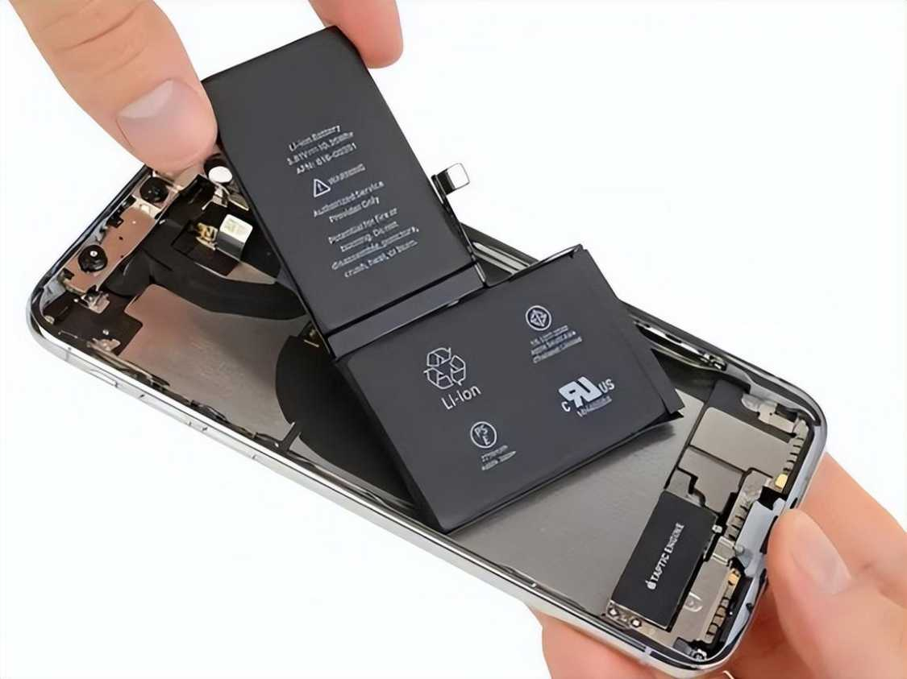

伊奈🍥🧊🍔🍜💊
@ww123qwq
@AriXZone 防水这一块😅

魔都老猿
@AriXZone
2026 年 4 月欧盟再次发布了《新电池法》相关指南和实施细节，“强制用户可自行更换电池”的最终截止日期是 2027 年 2 月 18 日。
新规对“可更换”有极其严格且具体的定义，不再允许厂商用“胶水封死”来搪塞：
无需专业工具： 用户应当仅使用市售普通工具（如十字螺丝刀）即可拆卸电池。 https://t.co/7tkUVUXnkh